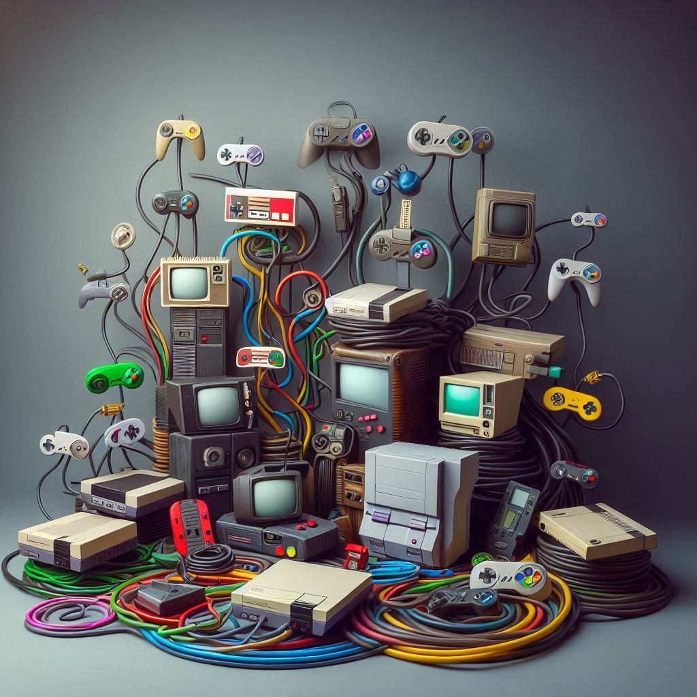
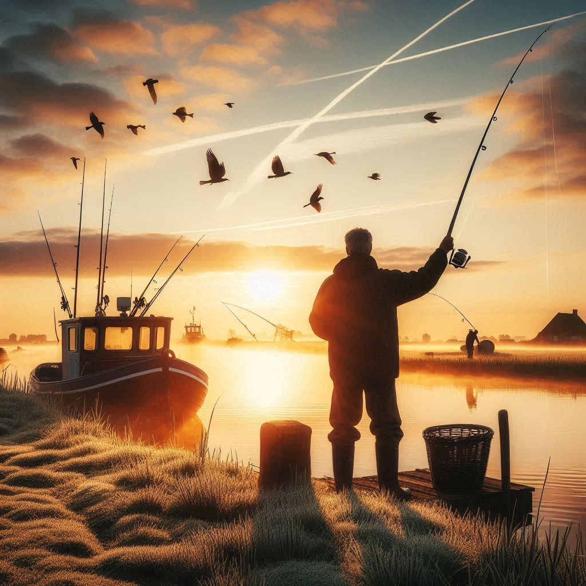
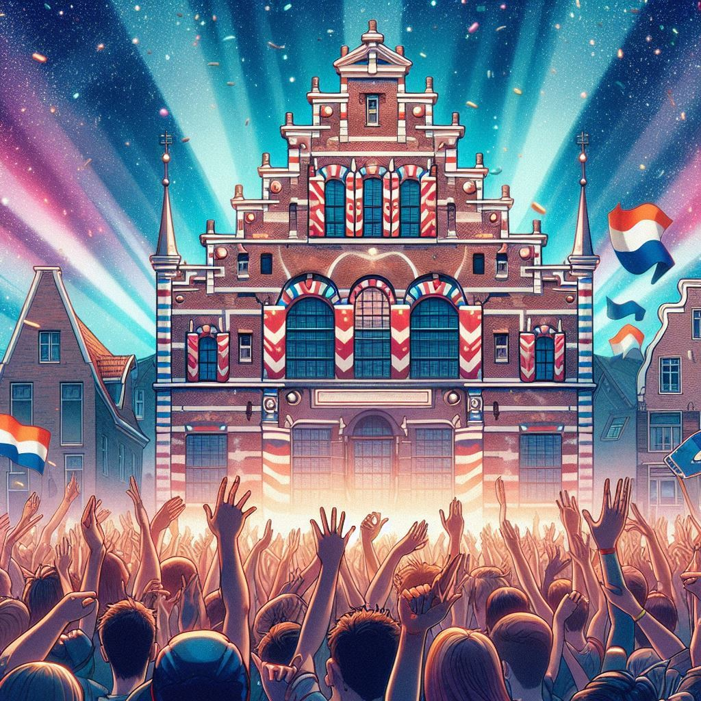
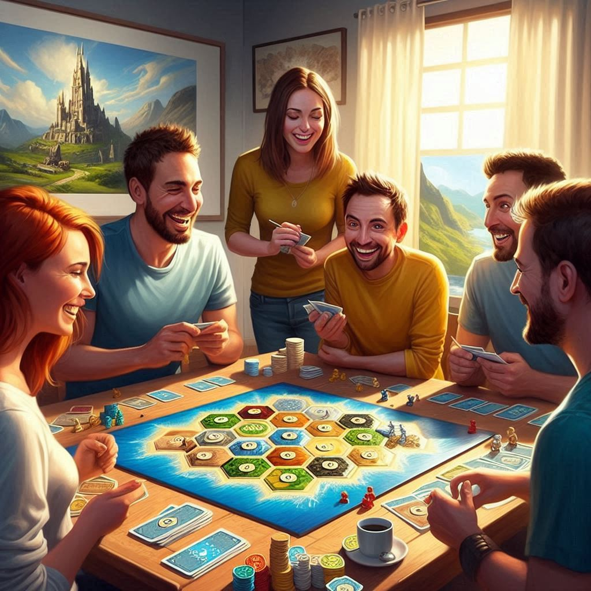
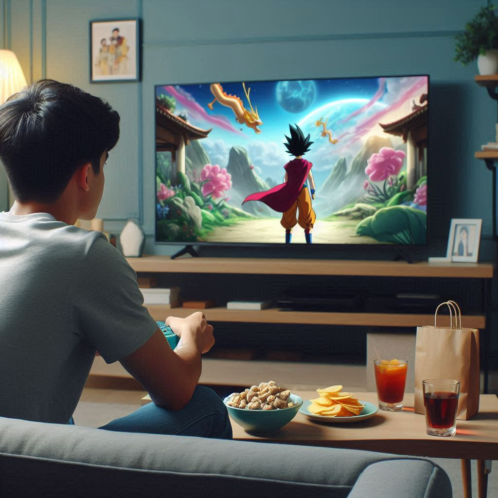
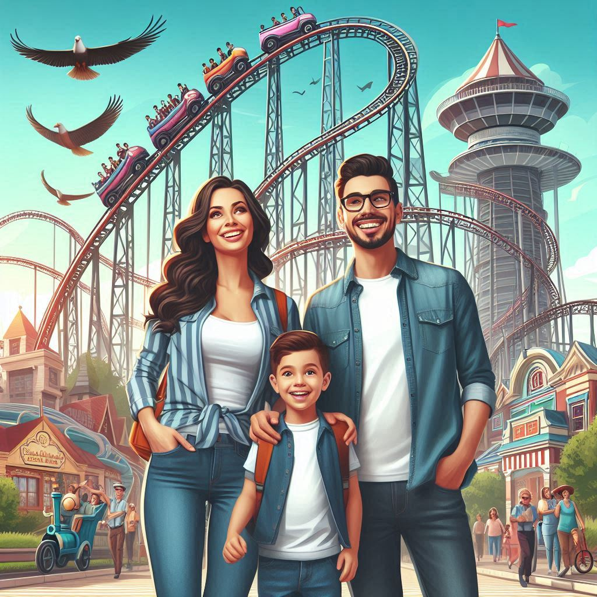
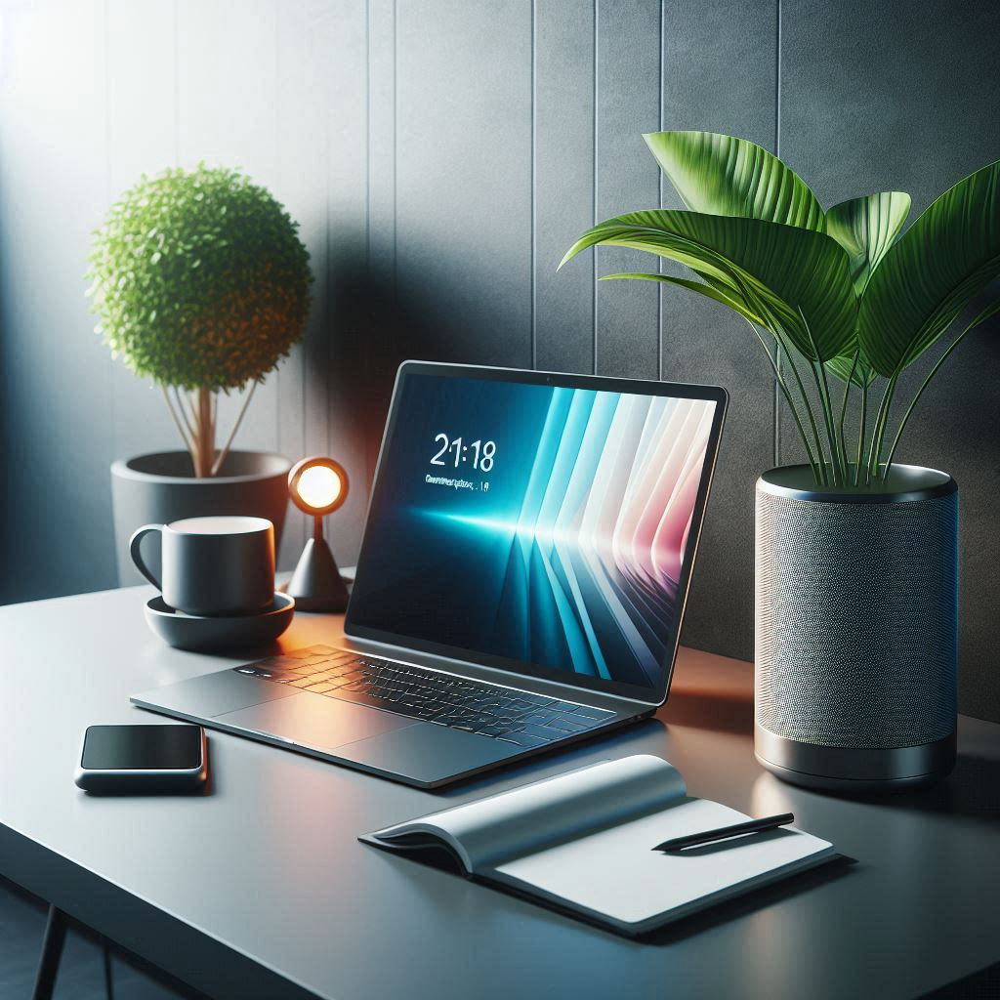
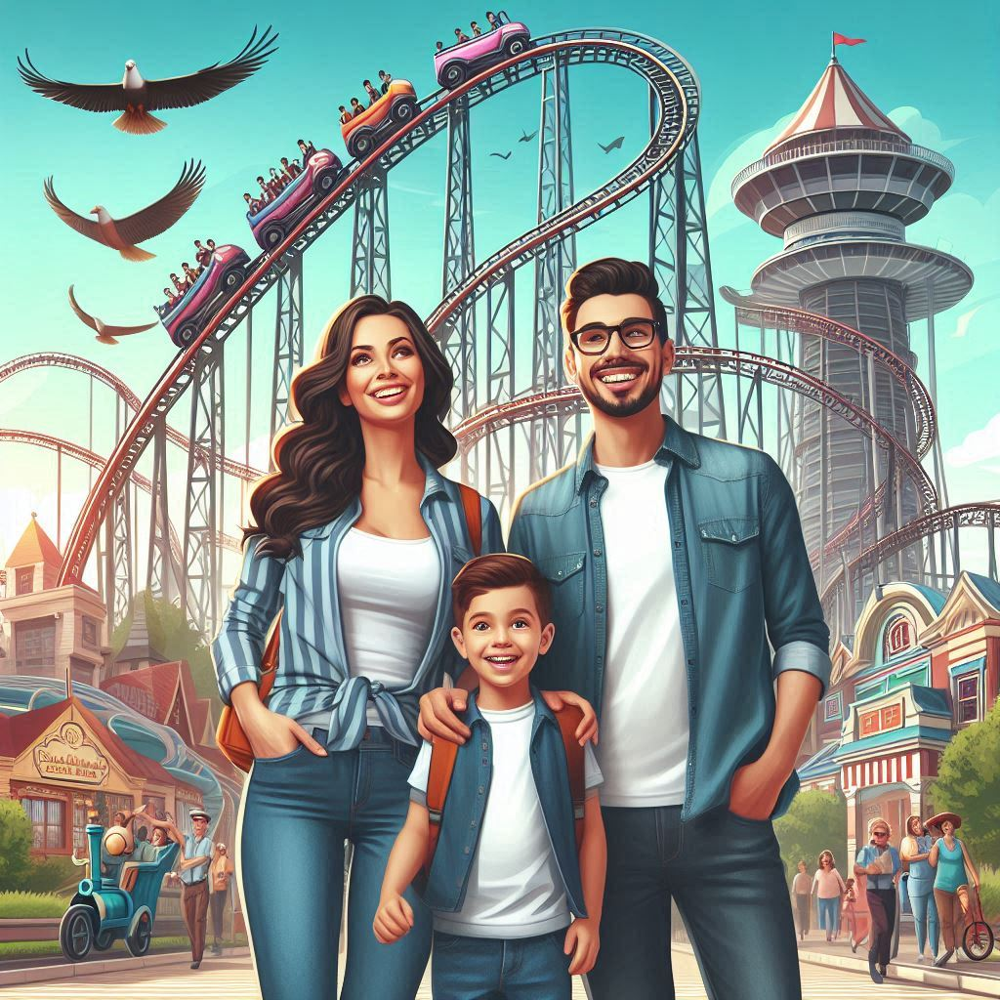
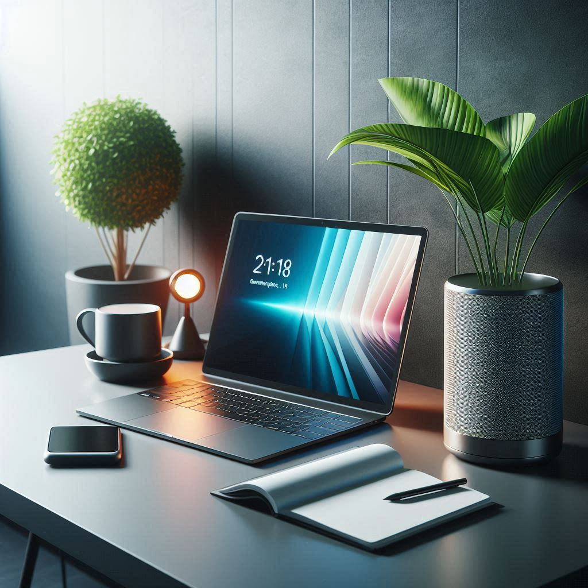

Let me introduce myself
I am Stevie Lapré, born on August 15, 1987 in Waalwijk and raised in the Zanddonk district.I have been fascinated by technology from an early age. As a child of the 90's, I experienced almost the entire digital revolution.
It all started at home with the Atari and the Sega Master System – computers that first brought entertainment through digital games. The possibility to lose yourself in a virtual world that was specially developed for the consumer marked the beginning of the digital revolution for me.
New consoles soon followed: the NES (Nintendo Entertainment System), SNES (Super Nintendo Entertainment System), N64, Nintendo GameCube, Nintendo Wii, Nintendo Switch, and the entire range of PlayStations (1, 2, 3) and Xbox consoles (Xbox, Xbox 360, Xbox One, Xbox Series X).
In addition to consoles, I also became increasingly fascinated by PC's and at a later stage laptop devices.
The rapid technological progress made me curious and challenged me to learn more. I started opening up hardware and taught myself how to get computers working again after assembly. That same curiosity also led me to software. I discovered that the digital revolution was entering a new era, and I decided to fully join in.

80's/90's 20th Century
As the years went by, I started to delve more deeply into computers and laptops.This gave me a better understanding of how systems work and how hardware communicates with each other.
Despite still being active in the logistics sector, I got to know and understand different systems.

21th Century
Nowadays I am active in the ICT sector.Five years ago, due to circumstances, I left the logistics sector behind and decided to focus entirely on a career as an IT professional.

My Personal Life
Besides my career, I also have a normal family life that I enjoy every day.I met my wife in 2001 through friends. In 2006 we started a relationship and started our life together happily. In 2012 we got married and in 2013 our life was enriched with a beautiful son.
That year we also bought our house in Waalwijk, where we have since built a warm and loving home together.
Hobbies & Interest
In addition to my career, I also have a variety of hobbies. Although I want to be active in the tech world professionally, I am an outdoors person at home. I like to go fishing and explore new places. Traveling is a great way for me to explore the world. Of course, you can watch everything online via live streams, but nothing beats the experience of experiencing it yourself.I also like to enjoy a good party with friends, to let loose and have fun after all the hard work. However, I can also be a bit introverted sometimes. For example, I regularly play board games with friends, where we challenge and further develop our cognitive skills.
I also regularly watch anime series and movies, purely out of interest and to stay open-minded. Discovering different languages and cultures fascinates me. Just as computer languages have their own structure and logic, so do world languages, each with their own unique structure and spelling.
Cooking is another passion of mine. In my culture, they say: 'If you can't cook, you shouldn't live on your own.' That's why I think it's important to cook fresh and healthy food every day. Combining good food and exercise is essential for a healthy life.
In addition to holidays, I also like to go to amusement parks with my family. My son loves it and as he gets older, the world we can discover together grows. It's a passion that I like to share with him, no matter how old I get.
I'm also still a bit of the 'Tech Guy' of the neighborhood. I'm especially known to older people and those who are less interested in technology. Several times a month they ask me if I can help them with technical problems, repairs or advice. This can be about all kinds of IT-related matters, and I like to help them get everything working again.
This neighborhood help even led to me being asked to look at my son's sports club to see if there were any improvements possible in the field of IT & technology. Since last year I've been doing this as a hobby, not only to help individuals, but also to give clubs more exposure. This experience helped me to obtain my HBO module, partly thanks to the collaboration with the association. We are currently still working on further optimizing everything.
In addition, I always stay up to date with latest gadgets and tech trends, so that I know what is going on and can continuously improve my knowledge. Self-study and education remain important to me. I continue to educate myself in the field of IT and technology to explore the world as much as possible and to further expand my knowledge.
   
 



Would you like to know more about my quest for educating myself?
Then click on the button below for more information.
Click here